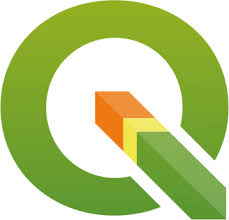
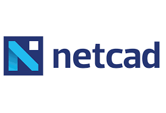
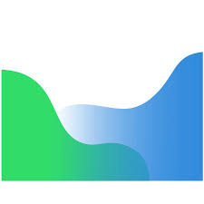

Geomatics Engineering Skill Scorecard
Python
Basic programming, data analysis, and automation skills.

QGIS
Vector/Raster analysis, mapping, and data visualization expertise.

Netcad
Usage in precise cadastral operations and local engineering projects.

Agisoft Metashape
High-level experience in photogrammetry and 3D modeling projects.
ArcGIS
Enterprise GIS solutions, geographic database management.